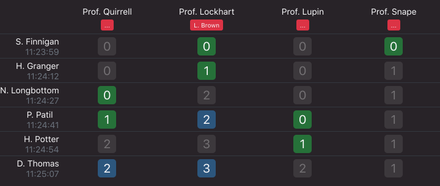

In verschiedenen Kursen stehen verschiedene Assistenten zur Verfügung, um die Arbeiten der Studenten zu testieren. Studenten stellen sich in einem Kurs an, indem sie einen oder mehrere der verfügbaren Assistenten auswählen. Der jeweils erste Student kann von den von ihm ausgewählten Assistenten aufgerufen werden.
Während der Wartezeit kann jederzeit die eigene Position innerhalb der Warteschlange, sowie die Anzahl Studenten die ebenfalls für die gewählten Assistenten anstehen überprüft werden. Die Kombination der gewählten Assistenten kann jederzeit geändert werden.

Stehen im Labor bzw. Phantomsaal Bildschirme zur Verfügung, kann dort eine Liste der aktuell anstehenden Studenten angezeigt werden.
Die Verwendung einer elektronischen Warteschlange bietet grundsätzlich die Möglichkeit, die Wartezeit sinnvoll zu nutzen. So kann während des Anstehens, um eine Arbeit vorzuzeigen, bereits an einer anderen weitergearbeitet werden.
Im Gegensatz zu klassischen Lösungen wie Nummernziehautomaten kann
die vque ohne Beschaffung teurer Hard- und Software genutzt werden.
Die Software ist Open Source und kostenfrei verfügbar. Von Studenten
können private Smartphones genutzt werden. Für die Assistenten bietet
sich die Nutzung von Tablets an.
Die serverseitige Software stellt keine hohen Anforderungen
und kann meist auf bestehenden Serversystemen installiert werden.
Mit der vque ist es wie beim klassischen Anstehen in einer Warteschlange möglich, sich zu entscheiden, anderen Studenten automatisch den Vortritt zu lassen, um beispielsweise eine kleine Korrektur wieder bei dem gleichen Assistenten vorzuzeigen. Dies ist mit vielen anderen Systemen nicht möglich.
Die App ist mit React Native in Javascript geschrieben und somit für Android und iOS als vollwertige App und für alle weiteren Geräte als Webseite verfügbar. Die Apps bieten im Gegensatz zur Webseite native Funktionen wie Notifications und Vibrationsalarm.
Der Server gliedert sich in mehrere Komponenten, die allesamt in
Python geschrieben sind. Sie können über das
Web Server Gateway Interface (wsgi)
in einen bestehenden Webserver (z.B. via
mod_wsgi
für Apache) eingebunden werden.
Zum Login können einer oder mehrere Authentication Server eingerichtet werden.
Diese greifen auf eine eigene Datenbank zu oder fragen im Hintergrund
bestehende Authentifikationssysteme der Universität ab.
Das eigentliche Backend der App wird als GraphQL Schnittstelle zur
Verfügung gestellt und speichert den aktuellen Zustand der Warteschlangen
in einer Datenbank, sodass dieser nach einem Neustart erhalten bleibt.
Wenn unter iOS und Android Push Notifications genutzt werden sollen,
wird hierfür ein weiterer Server gestartet.
Der Quellcode wird voraussichtlich im Herbst 2018 auf GitHub als Open Source veröffentlicht werden.